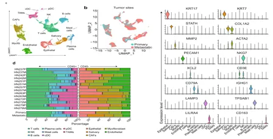
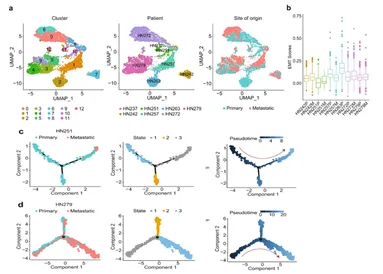
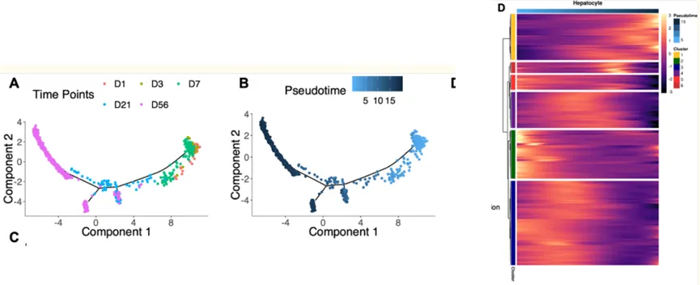

看视频，赢scRNA-seq样本分析权限
原文：https://mp.weixin.qq.com/s?__biz=MzAwMzIzOTk5OQ==&mid=2247531142&idx=2&sn=bad255eab931f4c97e26a11126cd7fb1&chksm=9b3c03d6ac4b8ac0efd7c795bd4d0953cbc9594b816b97cf57a1e358459705e3b00ca2cf3bb4#rd 合集：单细胞云平台

视频教程


希望实现零代码科研绘图？当然可以！上周我们和寻因生物联合推出的SeekSoul® Online单细胞云平台完整教学视频已在B站上线。同时，我们的同名视频号也在持续更新中，欢迎大家关注~我们也为大家准备了SeekSoulOnline云平台交流群
下方是本次的课程安排，此外我们也整理了相关问题答疑，已随课程附于B站视频页面：
| 时长(时.分.秒) | 课程名称 |
|---|---|
| 00.19.13 | 01 Biomamba生信基地及寻因生物介绍 |
| 00.03.59 | 02 课程安排和答疑交流群 |
| 00.13.16 | 03 云平台简介 |
| 00.36.22 | 04 账号注册和页面总览 |
| 00.24.00 | 05 数据上传与新建项目流程 |
| 00.43.47 | 06 基础分析一 |
| 00.48.35 | 07 基础分析二 |
| 00.51.57 | 08 画图工具 |
| 00.44.36 | 09 亚群分析 |
| 00.34.21 | 10 特征分析 |
| 00.41.58 | 11 差异富集分析 |
| 01.02.26 | 12 拟时序分析 |
| 00.27.37 | 13 转录因子分析 |
| 00.45.10 | 14 细胞通讯分析 |
| 00.20.33 | 15 肿瘤异质性分析 |
| 00.14.16 | 16 重新定义细胞分类 |
| 00.05.16 | 17 交互分析 |
| 00.04.21 | 18 作业及福利 |
B站视频：https://www.bilibili.com/video/BV1anpMznE18/
我们的视频号免费课程持续更新中，目前已完结scRNA-seq基础分析、拟时序分析、细胞通讯分析等系列课程。关注我们，后面还有超多教学~
课程资料下载：
https://pan.baidu.com/s/1UPxTwJ0sIAzj3I-LpUSG3Q?pwd=h9v9
云平台注册链接：
https://seeksoul.online/t_static/Biomamba/Biomamba.html
注册即免费获得一个月分析权限。完成下方作业打卡，即可免费获取3个月的云平台使用权限！


课后作业
作业1：文章标题：Single cell analysis in head and neck cancer reveals potential immune evasion mechanisms during early metastasis文章中文标题：对头颈部癌症的单细胞分析揭示了早期转移过程中潜在的免疫逃逸机制。文章链接：https://www.nature.com/articles/s41467-023-37379-y发表期刊：Nature Communications样本名称：(1)如下图的文章展示 进行大群注释、组间umap图、各细胞类型marker基因小提琴图展示、细胞类型占比分布

(2)对肿瘤细胞（就是上皮细胞，拷贝数变异已确定）完成细胞亚群分析（图a），对个样本上皮细胞EMT基因集打分（图b）；对HN251、HN279样本的肿瘤细胞进行组间拟时序分析（图c、d）
作业2：文章标题：Temporal Analyses of Postnatal Liver Development and Maturation by Single Cell Transcriptomics文章中文标题：单细胞转录组学对出生后肝脏发育和成熟的时间分析文章链接：https://pmc.ncbi.nlm.nih.gov/articles/PMC8842999 / 发表期刊：Developmental Cell① 如下图的展示 进行大群聚类注释（图A）、各细胞类型marker基因气泡图（图b）按照样本分组展示umap降维图（图c），展示组间的tsne图（图d）、以小提琴图展示各样本三个基因表达，代替山脊图 ②对肝细胞进行亚群分析，展示各样本的umap降维图、和scd2基因的featureplot图
②对肝细胞进行亚群分析，展示各样本的umap降维图、和scd2基因的featureplot图 ③对不同发育的肝细胞进行拟时序分析，得到如下图类似结果
③对不同发育的肝细胞进行拟时序分析，得到如下图类似结果
更多SeekSoul Online课程
一、基础教程
第一套：
第二套：
二、文章复现
零代码复现《Genome Medicine》|scRNA-seq解析CXCL16/CXCR6驱动驻留T细胞促进突触消除
** **
三、scATAC
持续更新中，敬请期待~
如何联系我们
 留一个领取资料、开箱即用的单细胞分析镜像的微信号[Biomamba_zhushou]，方便各位随时交流。同时我们也构建了交流群矩阵，欢迎大家入群讨论。
大家可以阅读完这几篇之后添加给生信入门初学者的小贴士
没有检索，就没有发言权
留一个领取资料、开箱即用的单细胞分析镜像的微信号[Biomamba_zhushou]，方便各位随时交流。同时我们也构建了交流群矩阵，欢迎大家入群讨论。
大家可以阅读完这几篇之后添加给生信入门初学者的小贴士
没有检索，就没有发言权
已有生信基地联系方式的同学无需重复添加
 您点的每个赞和在看，我都认真当成了喜欢
您点的每个赞和在看，我都认真当成了喜欢